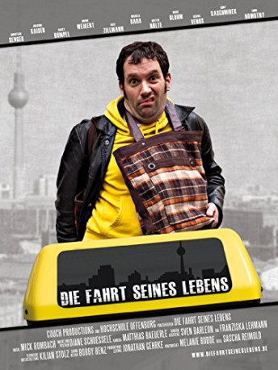

IMDB-Wertung: 6.9 / 10
IMDB-Wertung: 6.9 / 10  Metascore:
Metascore: 
After the bank robbery, Klaus uses a taxi as gettaway car by coinsidence and is forced to take one unexpected passanger after the other to their destinations, what makes his escape a little difficult.
 gesehen am 12.10.2017
gesehen am 12.10.2017 IMDB-Wertung: 6.9 / 10 Metascore:
After the bank robbery, Klaus uses a taxi as gettaway car by coinsidence and is forced to take one unexpected passanger after the other to their destinations, what makes his escape a little difficult.
Jahr: 2011
Dauer: 19 Minuten
FSK:
Land: Deutschland Studio: Concorde Home EntertainmentTonspuren: DD5.1 - ,
Untertitel:
Auflösung: 1080p (1920x816) Größe: 754 MB
Regisseur: Sascha Reimold
Drehbuch: Sven Barleon
Soundtrack:
Darsteller:
Datei: X:\2011(A-F)\Fahrt seines Lebens, Die (2011, FSK, 1920x816).mkv seit 09.10.2017
Festplatte: HD 2010(G-Z)-2011(A-F)
 Es gibt insgesamt 86 Filme in der Gruppe '2011(A-F)'
Es gibt insgesamt 86 Filme in der Gruppe '2011(A-F)'